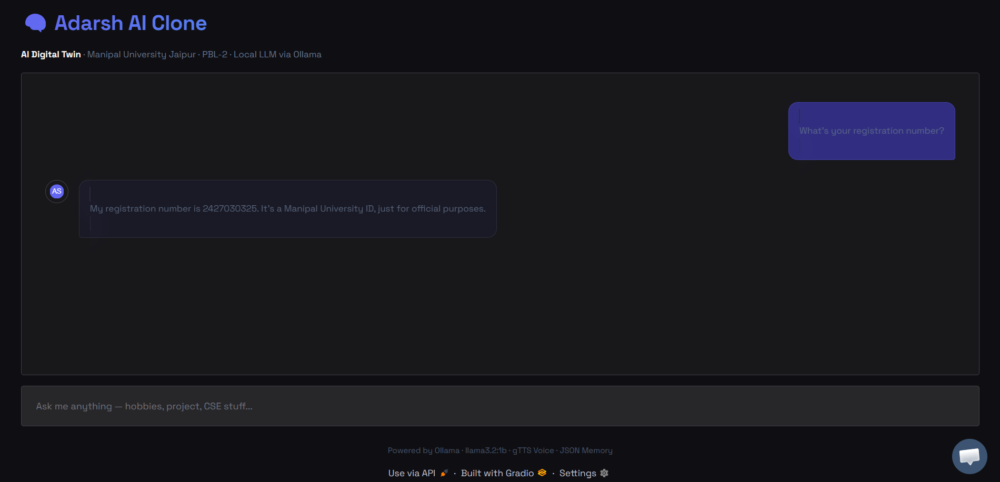

Adarsh Singh
Registration No: 2427030325
B.Tech CSE Core (5th Sem, 3rd Year)
Department of Computer Science & Engineering
Manipal University Jaipur
Project Guide: Dr. Virendra Mehgwal
This diagram shows how user input flows through different components of the system.
Each stage processes the data step-by-step to generate a final response.
Below is the working chatbot interface:

Any Questions?